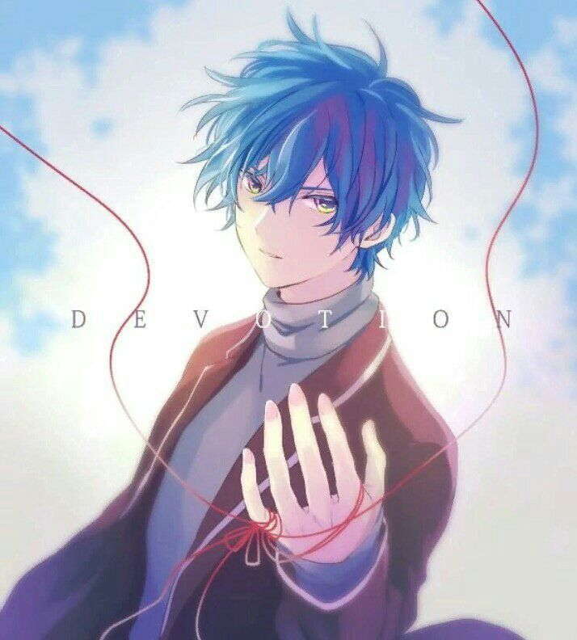

O porquê Antony Cass é o melhor personagem de TFOG2RMK
Antony Cass, ou Antônio Carlos, mas conhecido popularmente como Cass é o cara mais fod* do Universo fictício criado pelo Chinês Hey-ri-q, detentor da Armadura de Pégasus,o único entre seu grupo que teve um X1 franco com o humano mais forte do Universo, o Imperas, tendo saído vivo e esquivado de um golpe, algo que até o Cavaleiro de Gêmeos, teve dificuldade, que a propósito é seu mestre, o dono da Armadura de Pégasus não para por aí, ainda é o líder do esquadrão de prodígios da Atena e Jinchuuriki de Tifão, um Titã primordial. E ainda dizem que tem concorrência...